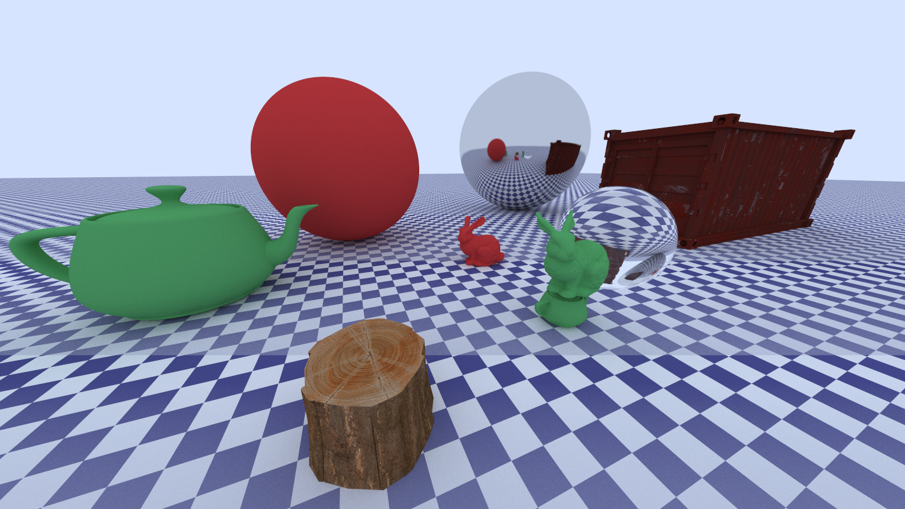
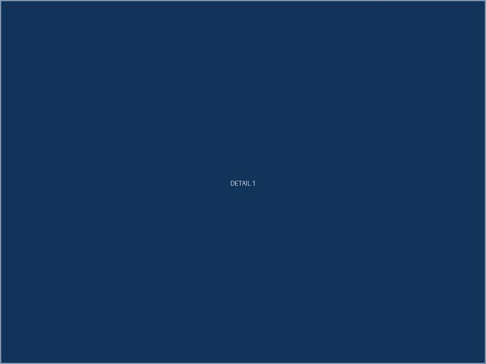
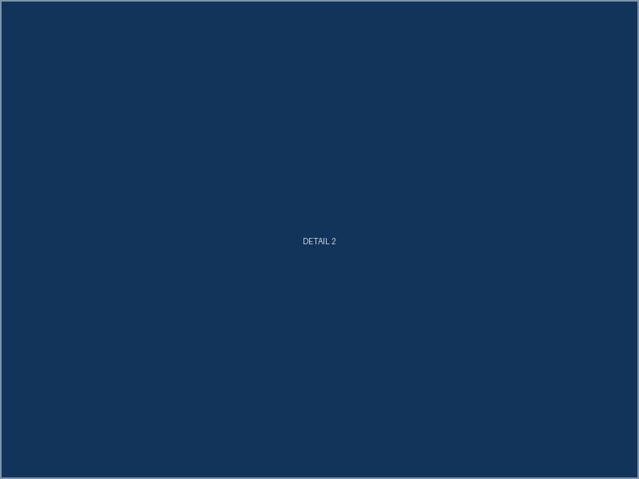

Overview
Raytracer developed by following the Ray Tracing in One Weekend series by Peter Shirley, with Additional features implemented at every step.
Render Timer
PNG output
Multithreading
OBJ mesh and Triangle Rendering
Atmospheric Perspective Camera effect
How it works
Go into the interesting technical or design details here. This is the place for diagrams, explanations of tricky parts, or decisions you're proud of.


What I'd do differently
Optional, but reflective sections like this make a project page feel like a real log rather than a marketing page. Delete if not needed.